Swan’s Road press kit
Updated 1 November 2026
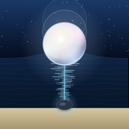
Swan’s Road is a two-player strategy board game for iPhone, iPad and iPhone Duo. Anchors pull, pearls drift, the tide rises. Learn it in five minutes; play it for years.
Everything on this page may be used freely in coverage of the game. Download the full kit (zip, 26 MB): 1024px icon, ten App Store screenshots, three hero paintings, the social card and a plain-text fact sheet.
Fact sheet
| Title | Swan’s Road |
|---|---|
| Developer | Jim Matheson, independent |
| Platforms | iPhone, iPad and iPhone Duo, iOS 17 or later. One universal app. |
| iPhone Duo | Runs natively. Closed, one column on the outer screen. Open, two panes: the board on the left; the controls, tide bar and player rows on the right, in portrait and landscape. |
| Release | Version 1.0, submitted to App Review. App Store listing |
| Price | Free. Swan’s Road Complete is a one-time purchase, US$5.99. The Nautical chart and Minimal looks are US$1.99 each, or included in Complete. No subscription. |
| Category | Games: Board, Strategy. Age rating 4+. |
| Players | One against the computer at four levels. Two on one device. Two nearby over Wi‑Fi or Bluetooth. Anyone online through Game Center, one move at a time. |
| Modes | 7×7 and 9×9 boards, a 30-level campaign, eighty puzzles, and a daily game with a Game Center leaderboard. |
| Privacy | App Store label “Data Not Collected”. No ads, no account, no analytics, no server. Games, stats and puzzle progress stay on the device. |
| Accessibility | VoiceOver, Dynamic Type and Reduce Motion. |
| Website | swanroad.app · Support · Privacy policy |
| Contact | jim@mouseandchisel.com. Promo codes for Swan’s Road Complete are available to reviewers on request. |
| Feedback | Jim welcomes player ideas for new features, add-ons and board designs, and any other positive or constructive feedback, through the support page. |
Descriptions
One line
A two-player strategy board game where anchors pull, pearls drift and the tide rises.
Short
Swan’s Road is a two-player strategy board game for iPhone, iPad and iPhone Duo. Five pearls lie between two shores. Each turn you place, step or lift one anchor; every anchor pulls the pearls in its row and column, and after each turn the pearls drift toward the stronger pull. Get three to your shore before your opponent does, or before the tide decides it. Play the computer, a friend on the same device, someone nearby, or anyone online through Game Center. Free, with no ads and no account.
Long
Swan’s Road is a two-player strategy game on a seven-by-seven board. Five pearls lie in an oyster bed on the middle row, between the two shores. Each turn you place, step or lift one anchor. Every anchor pulls the pearls in its row and column: strongly when it is close, weakly from three squares away. After each turn the pearls drift one square toward the stronger pull. Equal pulls cancel, so a well-placed anchor can hold a pearl still. Pull three pearls onto your shore before your opponent does.
A game lasts at most sixty turns. From turn 41 the tide rises and both shores grow deeper, and the tide comes early if the board goes still. If the turns run out, more pearls wins, and a tie goes to the second player.
The free game includes four computer opponents, from a gentle first opponent to an expert that thinks for four seconds a move, with an AI rating that climbs with you; two players on one device; nearby play over Wi‑Fi or Bluetooth; online play through Game Center; a ten-lesson tutorial on a live board; the first chapter of the campaign; and a daily game and daily puzzle with streaks, achievements and a leaderboard that resets at midnight. Swan’s Road Complete, a one-time purchase, adds the 9×9 board, campaign chapters two and three, the full puzzle archive, game review with the engine’s view of each move, statistics, handicaps and two more looks for the board.
There are no ads, no subscription and no account. Games, statistics and puzzle progress stay on your device. Swan’s Road supports VoiceOver, Dynamic Type and Reduce Motion, and plays the same on iPhone and iPad. It runs natively on iPhone Duo. Closed, the game fits the outer screen in one column. Open, the board sits on the left, with the controls, tide bar and player rows on the right.
How it plays
- Anchors pull. Each turn you place, step or lift one anchor. It pulls every pearl in its row and column: strongly up close, weakly from three squares away.
- Pearls drift. After each turn every pearl moves one square toward the stronger pull. Equal pulls cancel, so a well-placed anchor can hold a pearl still.
- The tide rises. From turn 41 both shores grow deeper, and the tide comes early if the board goes still. Sixty turns at most; a tie goes to the second player.
Things worth knowing
- The name. “Swan-road” (swanrād) is the Old English kenning for the sea in Beowulf.
- One new idea, not many. Pull strength falls with distance, pearls drift to the stronger pull, and equal pulls cancel. Every tactic in the game comes out of those three sentences.
- The tide is the clock. Games cannot stall: from turn 41 the shores deepen, and if nothing moves the tide comes early. Sixty turns at most.
- A tie goes to the second player, which balances the first-move advantage the way komi does in Go.
- Nothing leaves the phone. No ads, no account, no analytics, no server of its own. Online play runs through Apple’s Game Center.
- The daily game. One setup a day, the same for everyone, one try. Turns to win go on a leaderboard that resets at midnight.
- Native on iPhone Duo. Closed, the game runs in one column on the outer screen. Open, the board sits beside the controls, upright or sideways. Version 1.0 is built with the iOS 27.2 SDK.
- Accessible from the first build. VoiceOver reads the board, Dynamic Type scales the interface, Reduce Motion stills the water.
Assets
The previews below are web-sized. Full-resolution files are in the zip.
App icon
iPhone screenshots
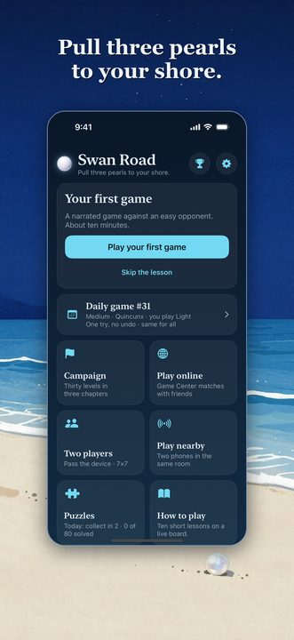
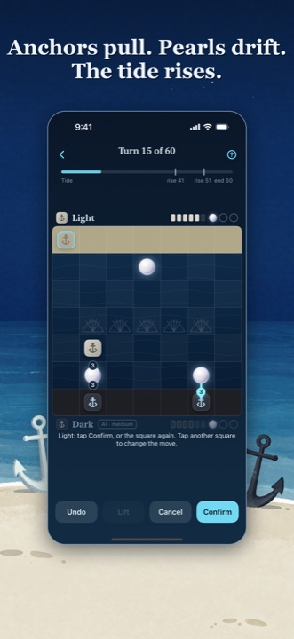
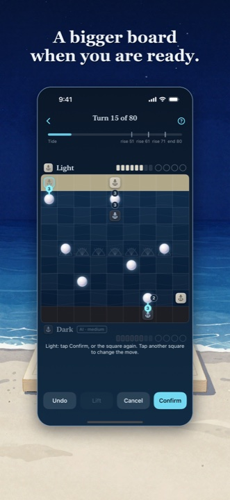
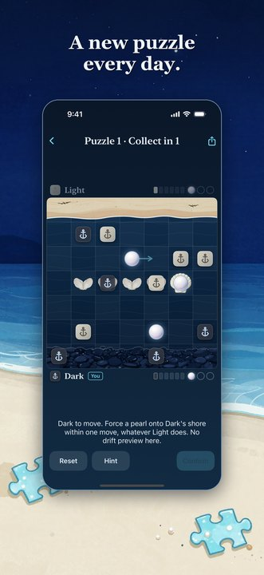
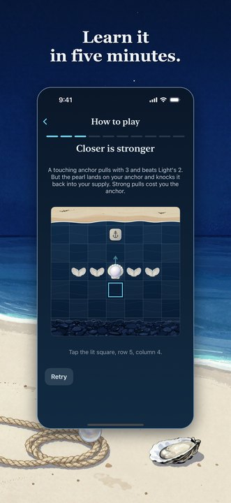
1206×2622 PNG in the kit.
iPad screenshots
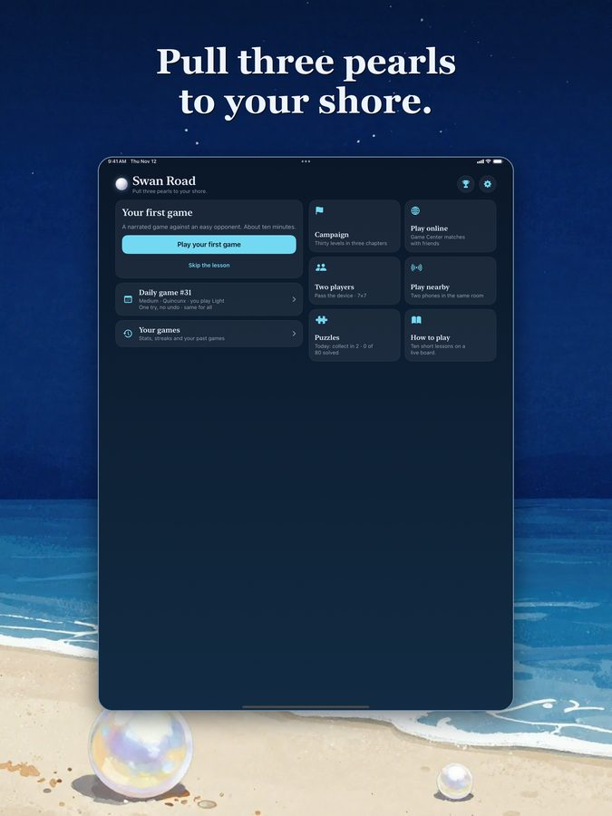
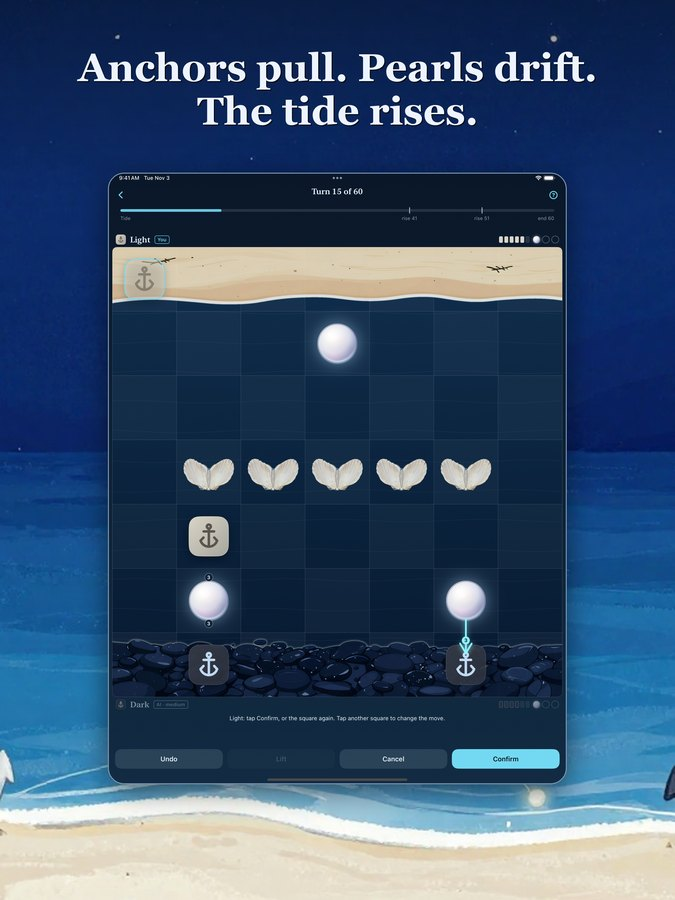
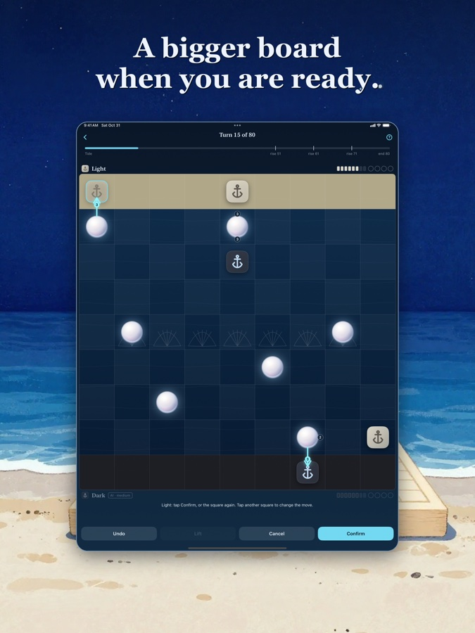
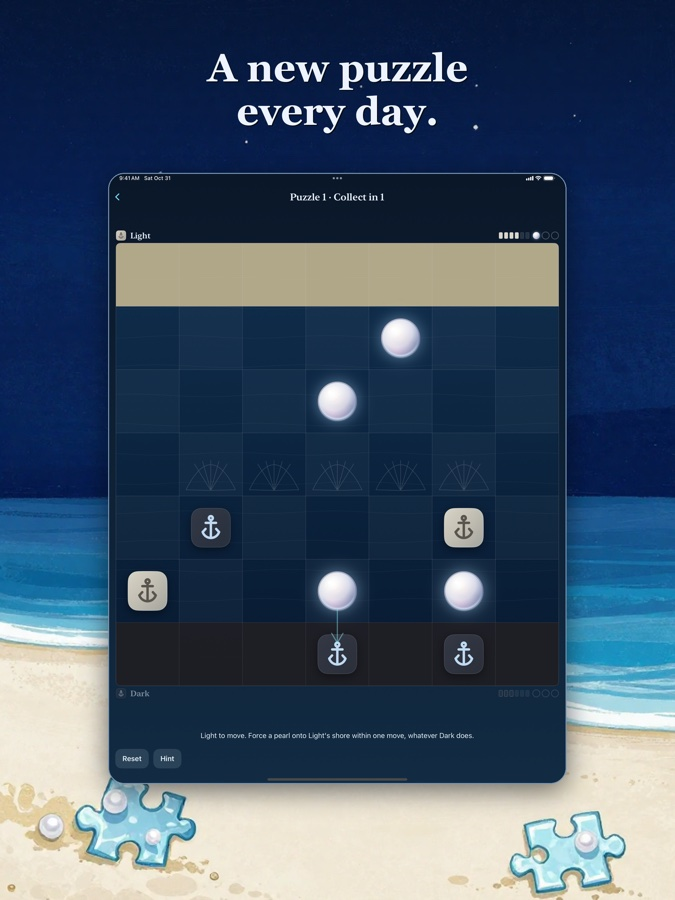
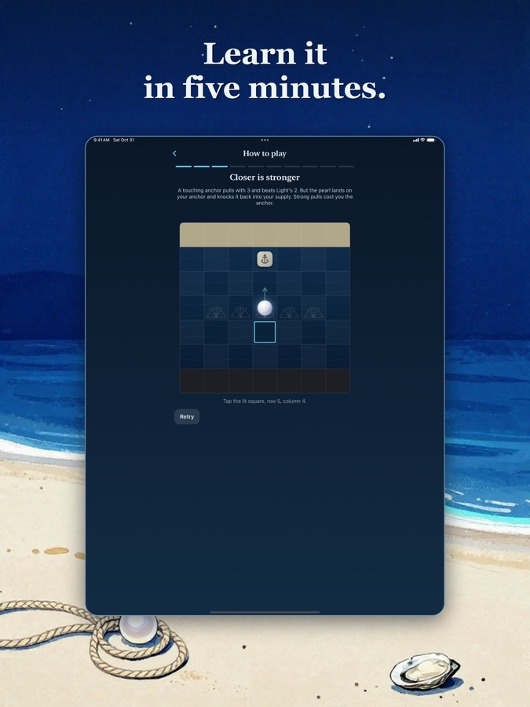
2064×2752 PNG in the kit.
Artwork
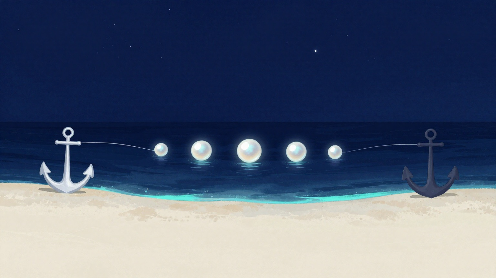
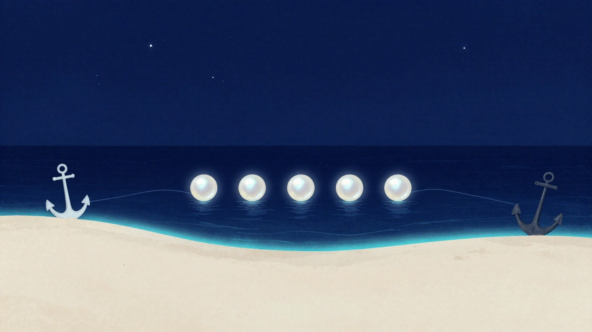
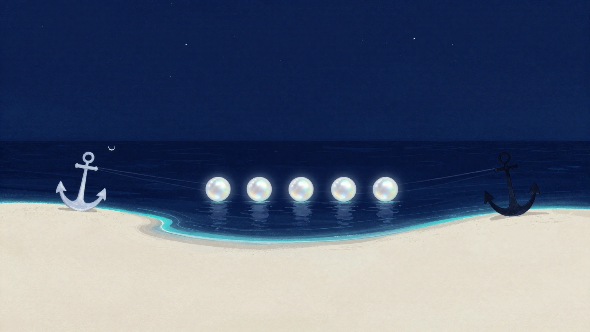
1536×864 PNG in the kit. The 1200×630 social card is here.

Boilerplate
Swan’s Road is designed and developed by Jim Matheson, an independent developer. It is free on the App Store for iPhone, iPad and iPhone Duo, with a one-time purchase for the complete game and no ads, subscription or account. More at swanroad.app.